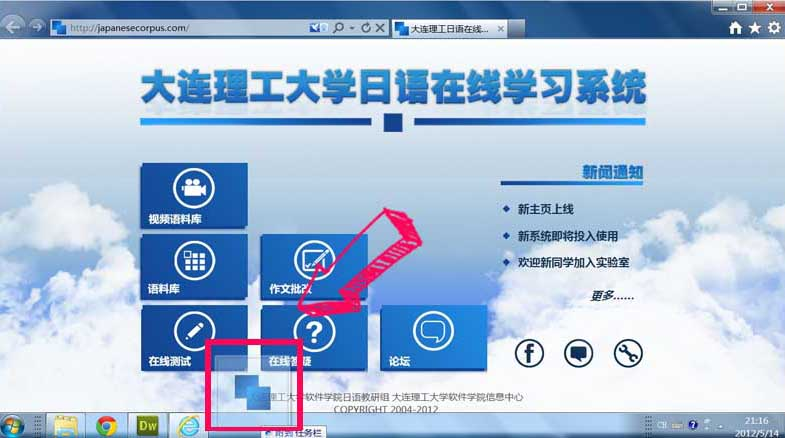
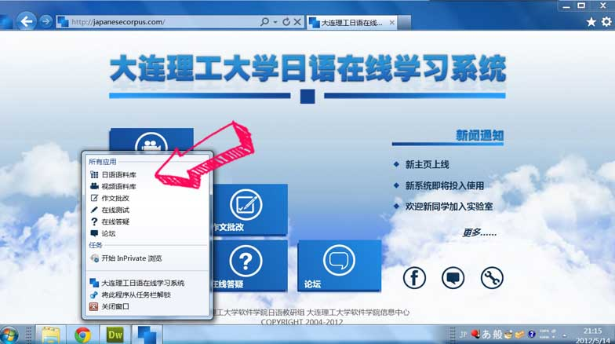

如果您在使用IE9，就请PIN我们吧！
什么是Pin？
Pin是IE9提供的独特功能，它能够让您将网站固定到任务栏，从而像使用本地应用一样来方便地浏览网站。
怎样来Pin？
您有两种方式来Pin网站（如下图）：
- 将网站的标签页直接拖到任务栏上
- 将地址栏左边的网站图标拖动到任务栏上

更多的Pin……
将网站Pin之后，把鼠标悬停在任务栏的图标上然后单击右键，您会惊喜地发现一个应用菜单（如下图），这里有本日语在线学习系统的最重要的六个应用。
通过这个菜单便能方便快捷地进入您想进入的应用，而不必打开过多的页面。
